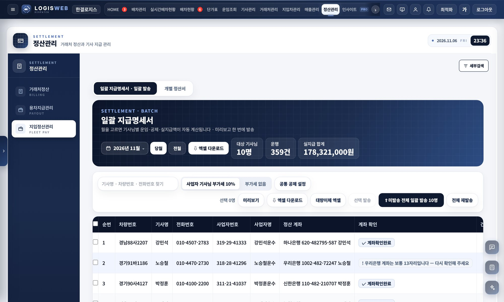
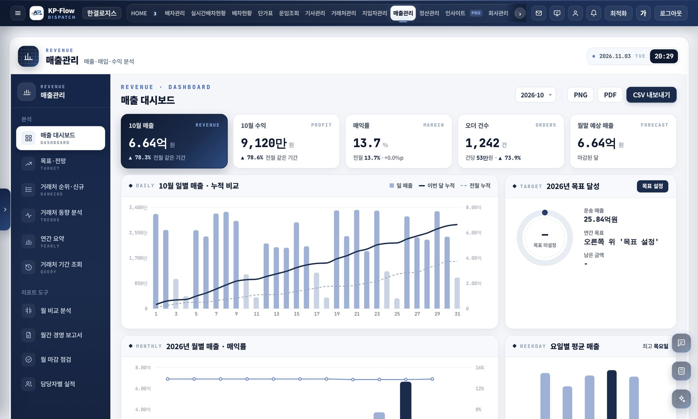

21:04
배차실의 불은,
아직 꺼지지 않았습니다.
[오더] 대성식품 → 평택 포승 · 11톤 윙
인천 서구 → 구미 1공단 · 5톤 냉장
급) 이천 → 대구 달서 · 오후 2시 도착
김포 → 대전 관평 · 1톤 탑 · 23만
내일 오전 상차 3건 추가요
운임 변경됐어요 52→55
쏟아지는
카톡 오더
📞 이민수 기사님
부재중
📞 박정훈 기사님
통화중
📞 노승철 기사님
부재중
📞 대성식품 담당자
"차 어디쯤이에요?"
끊이지 않는
위치 확인 전화
거래처정산_11월.xlsx
기사지급_최종_진짜최종.xlsx
매출집계(수정3).xlsx
미수금_확인필요.xlsx
그리고,
월말 정산
문제는 사람이 아니었습니다.
일이,
손에
의존하고 있었던 겁니다.
그래서,
10년
배차 현장이
직접 만들었습니다.
Logis
Web
ORDER SCAN
오더는,
붙여넣기
한 번으로
LogisWeb · 오더 스캔
LIVE BOARD
배차는,
모두가
실시간으로
LogisWeb · 실시간배차현황
REAL-TIME CONTROL
차량은,
지도 위에서
LogisWeb · 지입차 실시간 위치
SETTLEMENT
정산과
LogisWeb · 지입정산관리

E-APPROVAL
결재까지.
LogisWeb · 전자결재

한 번 입력한 데이터로,
오더
→
배차
→
관제
→
인수증
→
정산
→
매출
끝까지.
배차부터 정산까지,
운송사 업무를
한 화면에서
Logis
Web
운송사 통합 운송관리시스템(TMS) · PC · 모바일 · 기사앱
무료 체험 신청
logisweb.co.kr